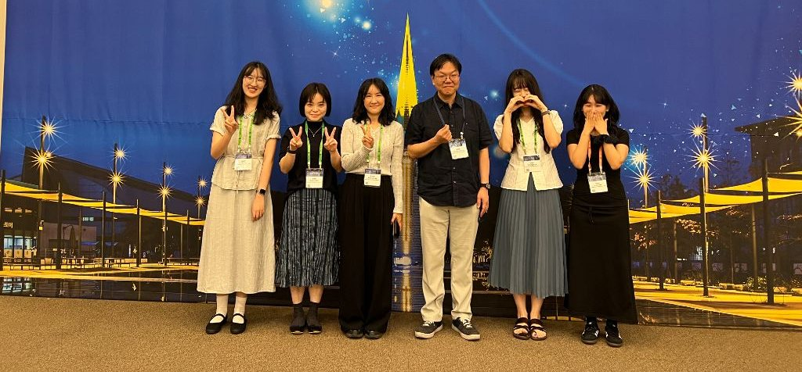
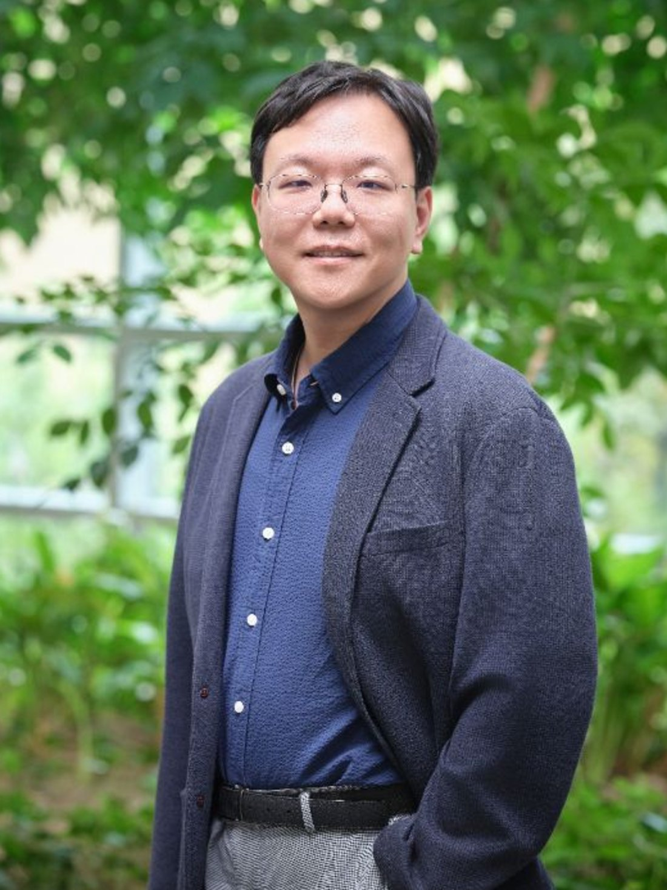

작은 실험실,
넓은 질문
A small lab,
wide questions
초파리 유전학에서 출발해 세포·동물 모델을 거쳐 환자 혈장 단백체까지. 서로 다른 배경의 사람들이 같은 질문으로 모입니다. 지금 대학원생과 연수연구원을 모집하고 있습니다. From Drosophila genetics through cell and animal models to patient plasma proteomics — people from different backgrounds converge on one question. We are recruiting graduate students and research fellows.


김형준 Hyung-Jun Kim 한국뇌연구원 · 뇌질환 연구부 · 신경유전학 연구실 Korea Brain Research Institute · Dept. of Brain Health and Disease
뇌질환 연구부장 · 책임연구원 (Ph.D.)
Department Chair, Brain Health and Disease · Principal Researcher
ALS-FTD 스펙트럼 장애는 운동뉴런에서 시작하면 ALS, 전두측두엽에서 시작하면 전두측두엽 치매(FTD)가 되는 하나의 TDP-43 단백질병증입니다. 아직 효과적인 치료법이 없으며, 본 연구실은 이 스펙트럼과 함께 알츠하이머병(AD)·루이소체 치매(DLB)를 포함한 치매 축을 두 개의 상보적 축으로 다룹니다.
ALS-FTD spectrum disorder is a single TDP-43 proteinopathy: motor-neuron onset gives ALS, frontal and temporal onset gives frontotemporal dementia (FTD). No effective therapy exists yet, and the laboratory addresses this spectrum together with Alzheimer's disease (AD) and dementia with Lewy bodies (DLB) along two complementary axes.
첫째, 초파리의 강력한 in vivo 유전학과 포유류 세포 모델을 활용해 단백질 품질관리(PQC) 체계 이상, 소포체 스트레스, 신경염증 등 공통 병리 기전을 해부합니다. 둘째, 환자 유래 혈장·뇌척수액(CSF)·뇌 조직·세포의 다중오믹스 프로파일링 — 최신 고다중도 단백체 플랫폼인 Olink(항체 기반)와 SomaScan 11K(압타머 기반)에 WGS를 결합해, 재현성 있는 진단·예후 바이오마커와 새로운 치료 타겟을 발굴합니다.
First, we use Drosophila in vivo genetics together with mammalian cell models to dissect shared pathological mechanisms: protein quality control (PQC) dysfunction, endoplasmic reticulum stress and neuroinflammation. Second, we perform multi-omics profiling of patient-derived plasma, CSF, brain tissue and cells — centred on current high-plex proteomic platforms, Olink (antibody-based) and SomaScan 11K (aptamer-based), combined with WGS — to identify reproducible diagnostic and prognostic biomarkers, which are then carried forward into therapeutic strategy rather than left as descriptive markers.
- 연구목표
- Aim
- 노화 관련 신경퇴행성 질환의 공통 병리 기전 규명 및 환자 오믹스 기반 바이오마커 발굴
- Elucidating shared pathological mechanisms of age-associated neurodegenerative diseases and discovering patient-derived omics biomarkers
- 연구키워드
- Keywords
- 다중오믹스 · 신경퇴행성 질환 · 혈장·뇌척수액(CSF) 바이오마커 · 단백체 · 신경염증 · 신경-교세포 상호작용 · 데이터과학
- Multi-omics · neurodegenerative diseases · plasma and CSF biomarkers · proteomics · neuroinflammation · neuron–glia interaction · data science
- 주요 기법
- Key techniques
- 초파리 유전학 · 신경세포-교세포 공동배양 · 미토콘드리아 활성 분석 · 초파리 행동분석 · 환자 유래 혈장·CSF·뇌 조직 고다중도 단백체(Olink · SomaScan 11K)
- Drosophila genetics · neuron–glia co-culture · mitochondrial activity assay · Drosophila behavioural analysis · patient-derived plasma/CSF/tissue multi-omics
- 사용 검체
- Specimens
- 혈장 · 뇌척수액(CSF) · 뇌 조직 · 환자 유래 세포 (Olink · SomaScan 11K · WGS)
- Plasma · CSF · brain tissue · patient-derived cells (Olink · SomaScan 11K · WGS)
- 사무실·실험실
- Office / Lab
- 4-1호 오피스 · Wet lab 4-1 · Fax. +82-53-980-8259
- Office 4-1 · Wet lab 4-1 · Fax +82-53-980-8259
이력Curriculum vitae
주요 경력
Appointments
- 2026 –뇌질환 연구부장 · 책임연구원, 한국뇌연구원Department Chair, Brain Health and Disease · Principal Researcher, KBRI
- 2020 – 2026연구본부장, 한국뇌연구원Director of Research Division, KBRI
- 2019 –책임연구원, 한국뇌연구원Principal Researcher, KBRI
- 2013 – 2019선임연구원, 한국뇌연구원Senior Researcher, KBRI
- 2008 – 2013박사후연구원, University of Pennsylvania / HHMI (Nancy M. Bonini Lab), 미국Postdoctoral Fellow, University of Pennsylvania / HHMI (Bonini Lab), USA
- 2007 – 2008박사후연구원, 서울대학교 생명과학부 (임정빈 교수 연구실)Postdoctoral Fellow, School of Biological Sciences, Seoul National University (Yim Lab)
학력
Education
- 2000 – 2007박사 (Ph.D.), 신경유전학 — 서울대학교 생명과학부Ph.D., Neurogenetics — School of Biological Sciences, Seoul National University
- 1996 – 2000학사 (B.S.), 미생물학 — 서울대학교 생명과학부B.S., Microbiology — School of Biological Sciences, Seoul National University
수상 · 학회
Honours & societies
- 2023.06동천 신진과학자상, 한국생화학분자생물학회Dongchun Young Scientist Award, KSBMB
- 2022한국뇌연구원 우수논문상KBRI Outstanding Paper Award
- 2026 –한국 ALS 연구회 학술이사Board Member, Korean Consortium for ALS Research
- 2020 –한국뇌신경과학회 대의원Delegate, Korean Society for Brain and Neuroscience
- 2017 –한국신경퇴행성질환학회 학술위원Member, Academic Committee, Korean Society for Neurodegenerative Disease
- 2020 – 2022한국초파리학회 학술위원장Chair, Academic Committee, Korean Society for Drosophila
연구진과 학생The team and students
연구원 3명, 연수연구원 2명, 연구지원·학생 2명 — 총 7명입니다. 이름은 각자 동의 후 게시합니다.
Three researchers, two research fellows, one research assistant and one MS student — seven in total. Names are published with consent.
- 이신려Shin-Ryeo Lee 선임연구원Senior researcher
- 조명진Myung-Jin Jo 연구원Researcher
- 전유미Yu-Mi Jeon 연구원Researcher
- 김세연Se-Yeon Kim 박사후 연수연구원Postdoctoral fellow
- 유예지Ye-Ji Yu 석사후 연수연구원Research fellow (MS)
- 우정화Jung-Hwa Woo 연구조원Research assistant
- 이유미Yu-Mi Lee 석사과정MS student
※ 총 7명 — 연구원 3 · 연수연구원 2 · 연구조원 1 · 석사과정 1. 이름은 각자 동의 후 게시합니다.
※ Seven members in total — 3 researchers, 2 research fellows, 1 research assistant, 1 MS student. Names are published with each person's consent.
지금 대학원생과
연수연구원을
모집합니다.
We are recruiting
graduate students
and research fellows.
초파리 유전학, 세포 모델, 또는 환자 오믹스 분석 중 하나에 관심이 있다면 전공은 크게 중요하지 않습니다. 분자생물학·세포생물학·통계·계산과학 어느 쪽에서 와도 시작할 수 있습니다. The specific background matters less than the interest: Drosophila genetics, cell models, or patient omics. Molecular biology, cell biology, statistics and computational science are all workable starting points.
- ① CV 또는 이력서 (학위, 연구 경험, 보유 기술)
- ① CV or résumé (degrees, research experience, techniques)
- ② 연구 관심 요약 (A4 반 장 이내)
- ② A short statement of research interest (half a page)
- ③ 가능하면 발표 논문 또는 학위논문 요약
- ③ If available, a publication or thesis summary
단백질 응집에서 교세포 염증까지,
학생연구원이 처음 맡을 질문
From protein aggregation to glial inflammation —
the questions a new student starts on
전공을 지정해 모집하지 않습니다. 아래 키워드 중 하나에 끌린다면 그것으로 충분합니다. We do not recruit by major. If one of the keywords below pulls at you, that is enough.